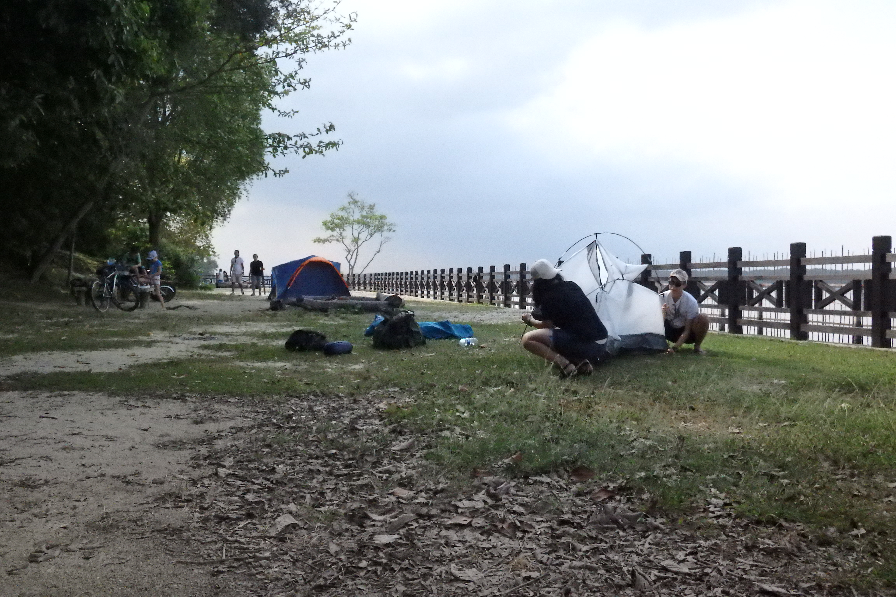
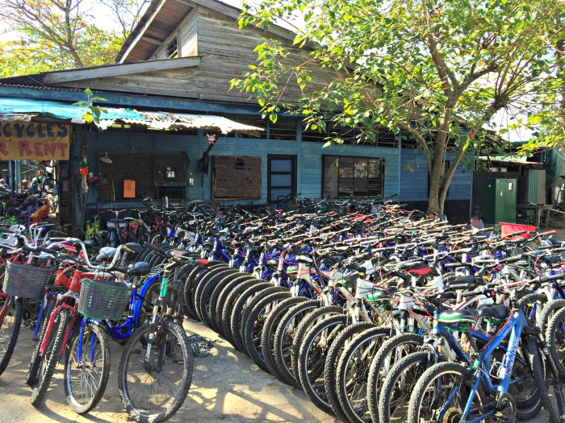
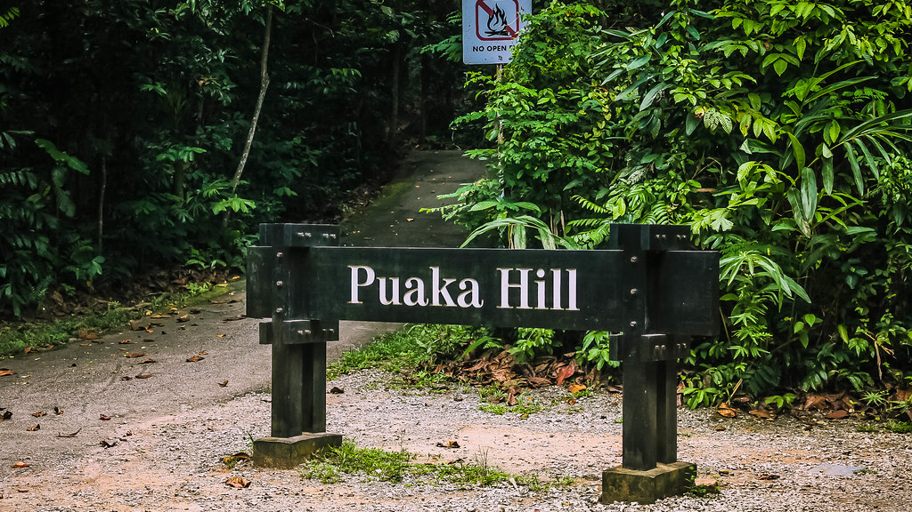
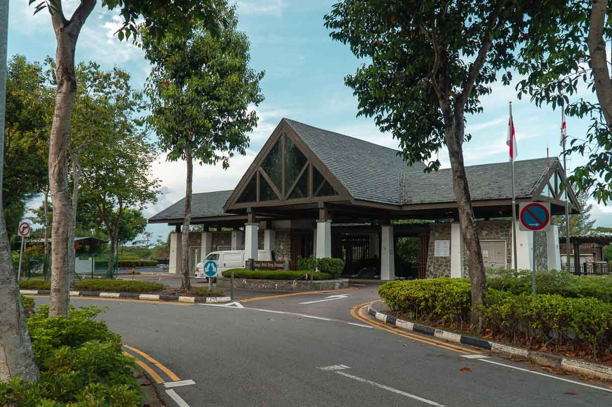
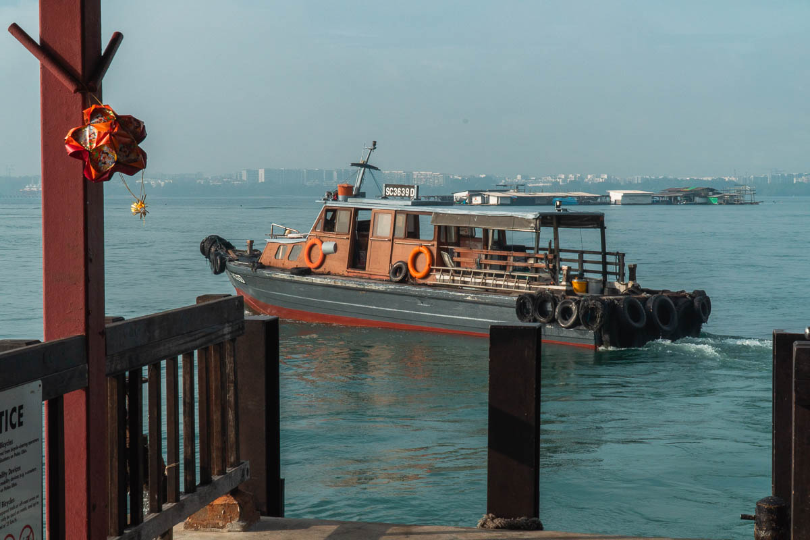

Map of Pulau Ubin
Location of Pulau Ubin in Singapore by Seloloving
For more history on the island, click here!

Things to do!
- Camping 
- Jelutong campsite
- Mamam Campsite
- Endut Senin Campsite
- Cycling 
- Hiking 
Mamam Campsite by NParks
Camp at 3 different campsites in Pulau Ubin!
Bicycle shop in Pulau Ubin
The best way to get around Pulau Ubin is by Cycling available for rent at the many bike stalls near the jetty. Rates varies from $10/hr or more.
Foot of Puaka Hill
There are many trails to hike in Pulau Ubin. Such include the Sensory Trail garden or up Puaka Hill!
Getting to Pulau Ubin
- Changi Ferry Point Terminal
- Bumboat to Pulau Ubin

Image of Changi Ferry Point Terminal by The Travel Intern

Image of a bumboat departing for Pulau Ubin by The Travel Intern
Opening Hours: 7AM-7PM
Cost: $3/pax